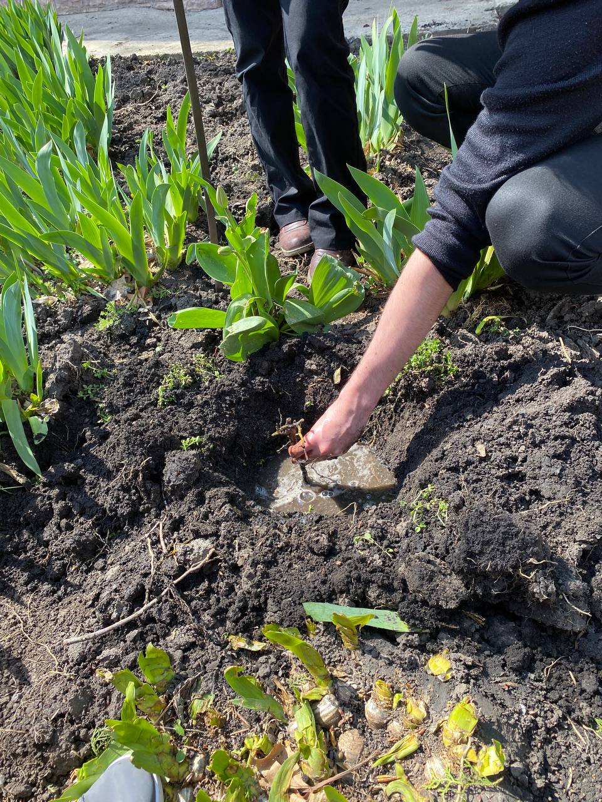
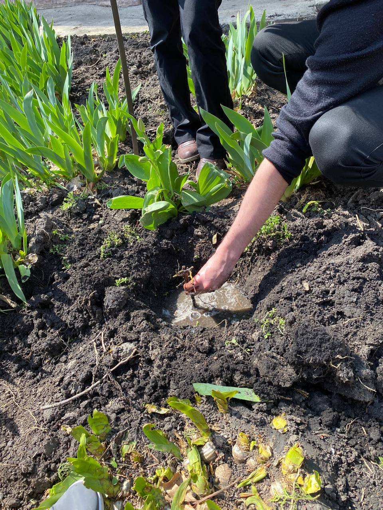
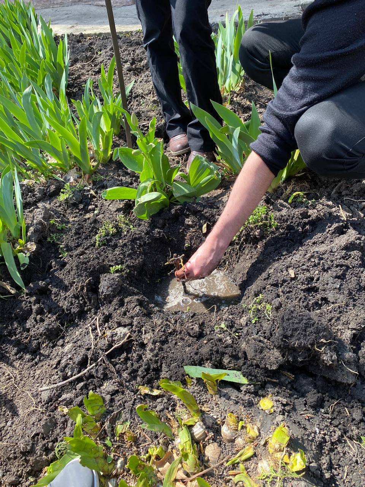
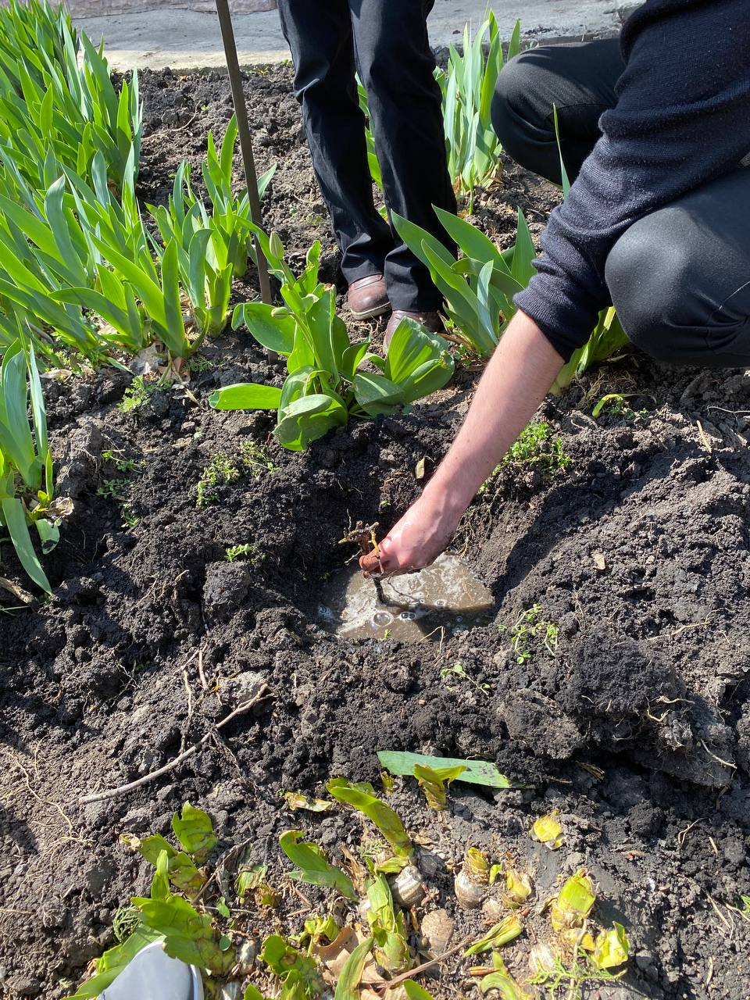

Galeria noastră
 



Urmărește acest videoclip pentru a învăța regulile esențiale ale reciclării corecte.
Locații unde poți recicla materiale.
Reciclare PET, sticlă, aluminiu
Reciclare plastic, carton, metale
mun. Bălți, str. Ștefan cel Mare 3100
mun. Bălți, str. Henciului, 2A
or. Bălți, str. Nicolae Iorga, 11
mun. Bălți, str. Nicolae Iorga, nr. 29 Market nr. 11
| Site | Descriere |
|---|---|
| WWF | Protecția mediului și conservarea speciilor |
| Recycle Now | Ghid complet despre reciclare |
| Greenpeace | Activism pentru protejarea planetei |